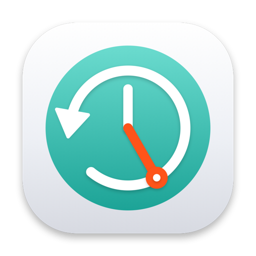

Time and days
Choose the exact start time and the weekdays. The backup starts when you decide.

Time Machine SchedulermacOS · Apple Silicon
Schedule Time Machine backups on specific days and times. You decide when it runs, not the last completed backup.
Time Machine schedules around the last completed backup. Time Machine Scheduler adds a real schedule: hour, minute and weekdays.
Choose the exact start time and the weekdays. The backup starts when you decide.
Reads the destination configured in Time Machine, local or network, and checks that it is reachable.
Skips on battery, prevents sleep during the backup and notifies you when it ends.
Phase, percentage, last backup and a readable log with automatic rotation.
Start a backup immediately, outside the schedule.
Removes the daemon, script and log, and returns Time Machine to the selected frequency.
xattr -dr com.apple.quarantine /Applications/TimeMachineScheduler.appcaffeinate does not prevent sleep with the lid closedThe project is open source on GitHub. It builds with Swift and the Command Line Tools, without an Xcode project:
make test
make app
make install